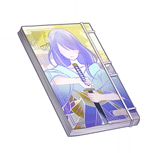

Inazuma · Books & Literature
Shogun Almighty: Reborn as Raiden With Unlimited Power
A popular Yae Publishing House light novel excerpt follows a troubled man who wakes in the body of the Raiden Shogun. Its author is unconfirmed, and the fictional Raiden’s exaggerated powers amuse Ei in her Story Quest.

A popular novel, not a Shogunate chronicle
The item description calls the work a popular Inazuman light novel whose unusual premise inspired other writers. It is sold at Yae Publishing House. Its events belong to fiction and should not be mixed with the Raiden Shogun’s actual history.
Only an excerpt is supplied in the item. It does not reveal the whole novel, its ending, or the protagonist’s later fate.
A desperate narrator wakes as the Shogun
The narrator describes family pressure, a lost job, gambling accusations he denies, and protection payments that threaten his parents. At the end of his options, lightning strikes and he wakes in a richly dressed body that he recognizes as the Raiden Shogun.
The premise is a reincarnation fantasy: a contemporary-seeming man suddenly inhabits a powerful figure. The text does not say that the real Ei experienced these events.
The cliffhanger undercuts the power fantasy
Kairagi confront the narrator, who assumes that the Shogun’s divine power will make the fight simple. He draws a blade and starts to invoke Musou no Hitotachi, then realizes he has no idea how to perform the technique.
This final beat turns the title’s promise of unlimited power into a joke about the gap between a borrowed identity and real skill. The excerpt stops before the encounter is resolved.
The author remains uncertain
A separate Yae Publishing House anecdote says Kadenokouji Kenzaburou submitted a manuscript with this title that pleased Yae Miko, making him a candidate rather than a confirmed author. Ei’s Story Quest shows her hearing the excerpt: she finds the premise imaginative and suspects Miko may have inspired it.
Those conversations connect the novel to the publishing house’s circle, but neither establishes that the displayed edition is definitively Kenzaburou’s work or that Miko wrote it.
This is an original CoreGG reading guide, not an official HoYoverse article or a reproduction of the game text. Source links below identify the records used so you can check the original context.
Sources & references
Check these sources for the original game text and reference trail.